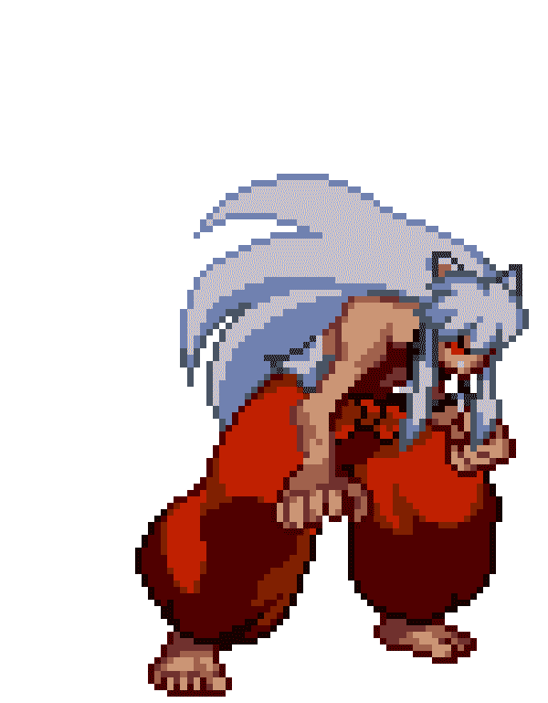

A
D
I
V
I
N
A
E
L
N
Ú
M
E
R
O
"Leyenda: 1 intento"
"Difícil: 10 intentos"
"Medio: 15 intentos"
"Fácil: 25 intentos"
"¿Eres un ser humano?: 30 intentos"

Introduzca un numero entre 1 y 100
-RESULTADO-